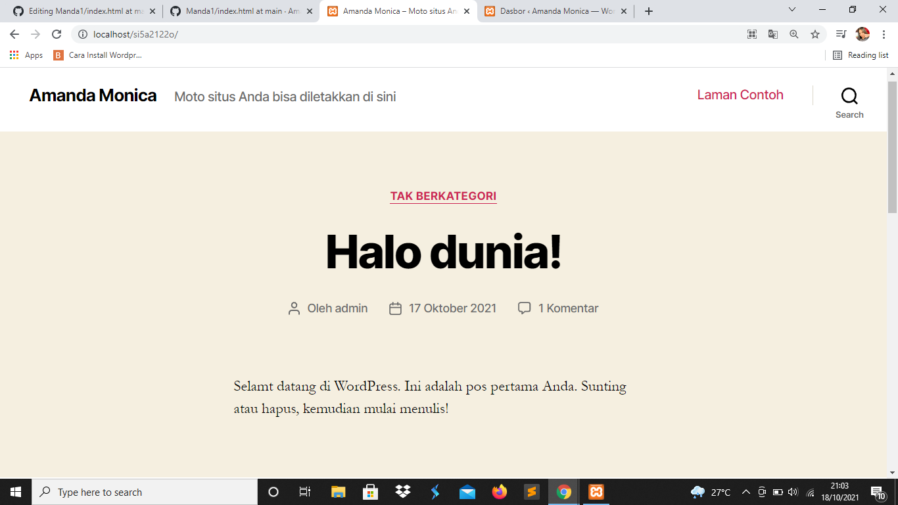
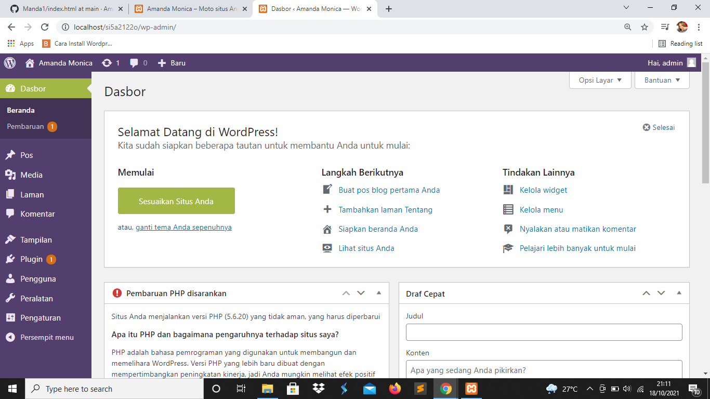

NIM : 1922500162
Nama : Amanda Monica
Kelompok : SI5A
Kesimpulan atau hasil pertemuan 1 yang dapat saya ambil adalah :
- di dalam htdocs, mesti ada folder si5a2122o, sehingga pada browser bisa diakses dengan http://localhost/si5a2122o
- jika object not found (404), maka cek dulu nama folder antara htdocs dengan yang diketik di localhost
- jika ada tulisan error establishing database connection, cek dulu apakah mysql sudah running pada xampp control panel
- jika sudah running, buka wp-config.php pada folder si5a2122o, dan cek db_name. db name ini pastikan ada di phpmyadmin
- jika pada phpmyadmin belum ada nama databasenya, maka import dulu file sql bahan pertemuan ke 2 (hasil pertemuan ke 1)
- wordpress memiliki 2 sisi, 1 tampilan backend (untuk admin/dashboard) dan 1 nya lagi tampilan front end (untuk pengunjung/client area)
- untuk backend, harus login dulu di alamat http://localhost/si5a2122o/wp-admin
Berikut tampilan halaman web setelah di restore:

Berikut tampilan front end:
Berikut tampilan back end:

berikut adalah link untuk download gambar
Download
Cara membuat akun github
- Klik new repository
- Isi nama repository dengan nama anda
- Klik add a README file
- Creating repository
- Klik add file lalu pilih create new file
- Ketik angka 1/index.html
- Lalu isi dengan rangkuman dan klik commit new file.
- Kemudian pilih settings cari pages dan ganti none dengan main
- Dan klik save.
Cara menambah foto pada Github :
- Siapkan foto yang akan diposting.
- Simpan foto dengan nama file tertentu contohnya Manda.png.
- Kemudian ketik ( tanda kutip tidak di tulis juga <"a href="Manda.png" target="_blank"> (jangan ada spasi dan juga tidak ada tanda kutip tersebut)<"img src="Manda.png" width="300px" height="150px">(disini jugas sama tidak ada tanda kutip)
- Lalu klik commit.
- Pastikan foto tersebut sudah diupload di github dengan cara klik folder 2 dan klik upload file.
- Kemudian cari foto yang akan diupload dan kemudian upload foto.
Cara menampilkan besar ukuran gambar pada github :
- klik edit pada file.
- tambahkan link gambar dengan cara ( tanda kutip di sebelah jangan di ketik <"a href="Nama file Gambar" target="_blank">(disini juga sama jangan di tulis tanda kutip dan tidak ada tanda spasi)<"img src="Nama file Gambar" width="300px" height="150px">(disini juga sama tidak ada kutip)
Cara memperbaharui profil :
- klik menu pengguna
- Lalu pilih profil
- Isi nama depan dengan nama Anda
- Isi nama belakang dengan nama Anda
- Isi nama panggilan
- Pilih tampilan nama secara publik
- Isi Email dengan Email Anda
- Isi situs web
- Dan isi info biografi
- Bisa menambahkan foto dengan mendaftarkan di situs WordPress.com
- Kalau ingin ganti password, tinggal mengganti password yang baru
- Lalu klik perbaharui data.
Cara daftar user baru (role, ubah, hapus) :
- Klik pengguna lalu pilih tambah pengguna baru (usahakan jangan mengandung spasi)
- Lalu isi nama pengguna
- Isi email pengguna
- Kemudian isi nama depan dan isi nama belakang
- Isi situs web
- Lalu isi kata sandi
- Pilih peranan. peranan terdiri dari :
- Pelanggan
Bisa melihat aktifitas rincian dasboard (bisa tau info terbaru)
Hanya bisa update profil dan password di komentar bisa diatur (user yang terdaftar baru bisa comment)
- Kontributor
Bisa melihat comment dan menu peralatan
Bisa melihat semua post tapi tidak bisa mengganti (bisa melihat hasil tulisan orang lain) bisa menambah post baru
Kontributor perlu mendapatkan persetujuan minimal dari editor atau penyunting atau administrator
Kontributor merupakan orang yang memiliki akun di web kita, boleh ngasih konten dan dapat di accpet oleh administrator apabila isinya berkualitas
- Penulis
Sudah dipercayakan admin web untuk langsung isi konten tanpa perlu ditinjau
- Editor
Disebut jugapenyunting
Tangan kanan seorang administrator
Bisa mengganti dan menyunting postingan orang
Tidak bisa install plugin dan ganti tema
- Administrator
Admin dari web yang menguasai web
Memiliki hak akses yang paling tinggi
Admin bisa instal plugin, ganti tema
Pengaturan
- Klik pengaturan umum
- Bisa mengganti judul situs
- Bisa mengganti slogan
- Menambah alamat WordPress
- Menambah alamat situs
- Menambah alamat email
- Keanggotaan (terdapat banyak akun dalam web jika mengaktifkan keanggotaan)
- Menentukan role atau peran pengguna baru (antara kontributor atau penulis)
- Pengatur waktu (UTC+7)
- Mengatur format tanggal
- Klik simpan perubahan
Menulis kaitannya dengan posting dan laman
Membaca kaitannya dengan pengunjung melihat web kita (ketika mengunjungi, kita mau nampilin apa)
Pengaturan diskusi mengenai komentar
Media kaitannya dengan gambar
Permalink kaitannya dengan struktur link
-